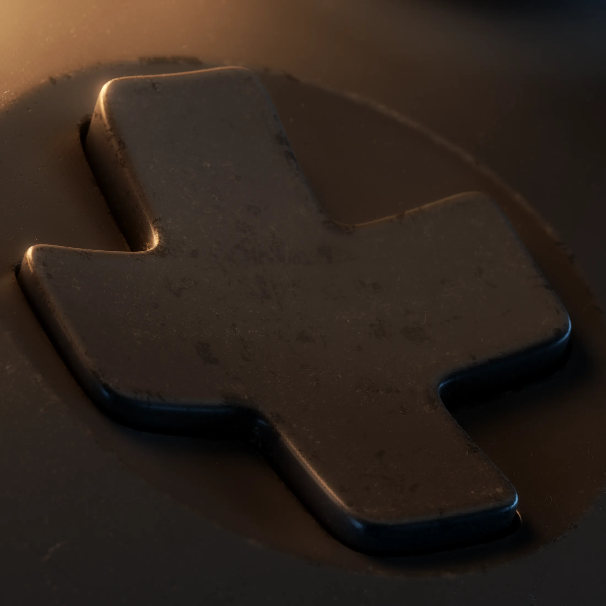
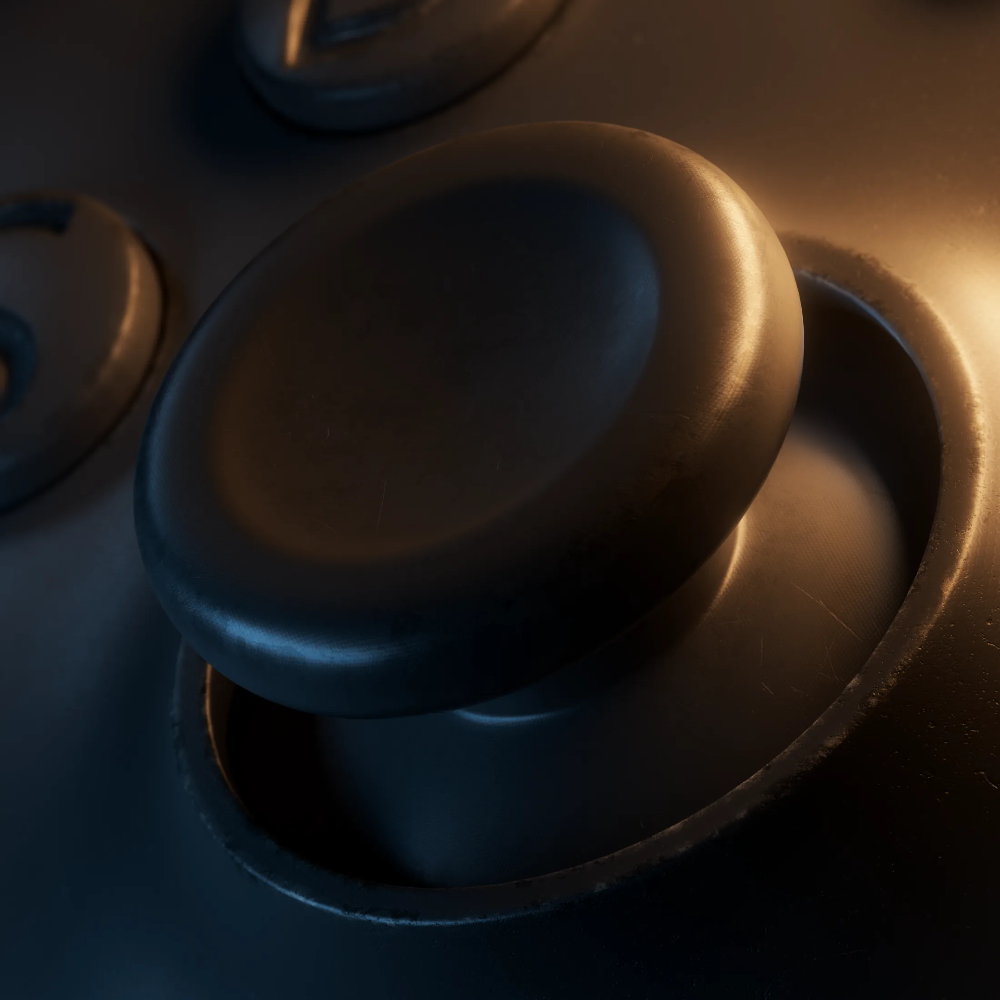
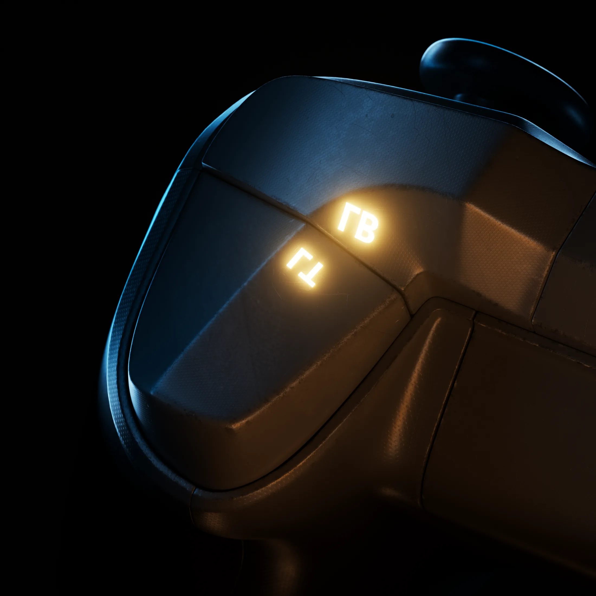

PROJECT 004 / FORM & LIGHT
游戏手柄
Controller · Product Visual
曲面表现 / 轮廓布光 / 结构细节
以冷蓝与暖金色光线勾勒连续曲面，让握持形态在暗部中显现；从整体轮廓延伸至按键、摇杆与肩键的精细质感。

操控细节
CONTROL / 02—03

肩键与光影
STRUCTURE / 04
FORM / SURFACE / LIGHT
让光沿产品的结构流动，以克制的明暗与精确的局部构图，呈现手柄的形态和触感。